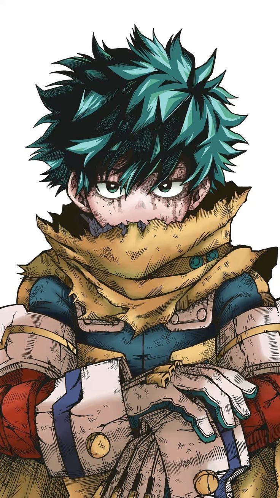
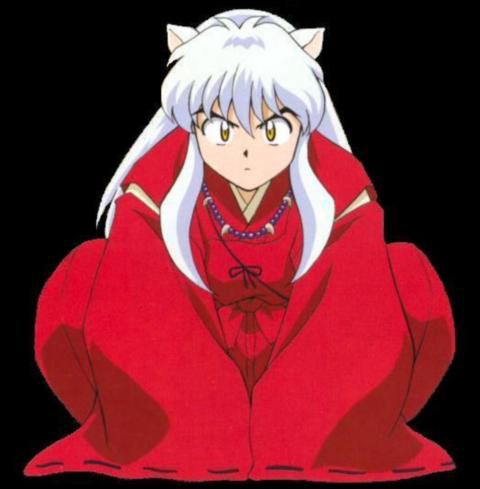

Hoy no quería regalarte solo flores amarillas.
Quería llevarte por cuatro mundos, porque hay cosas que a veces una sola historia no alcanza a decir.
“Vive con el corazón en llamas.”
Toca el sello para abrir la primera carta

“Tú también puedes ser una heroína en tu propia historia.”
Toca el sello para abrir la segunda carta

“No importa el tiempo o la distancia, siempre encontraré el camino hacia ti.”
Toca el sello para abrir la tercera carta
“No necesitas que nadie te diga que eres increíble. Tú ya lo eres.”
Toca el sello para abrir la última carta
Cada mundo tenía algo distinto que decirte, pero todos terminaban llegando al mismo lugar.
Y así, todos mis mundos coinciden en el tuyo.
Hoy quise regalarte flores amarillas de una manera diferente. Entre llamas, héroes, lunas y explosiones, quería dejarte algo que fuera solamente tuyo.
Gracias por ser mi persona favorita ♡
Que viva nuestro anime, nuestra historia y todos los capítulos que todavía nos faltan escribir. 🌻